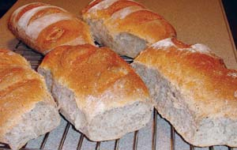
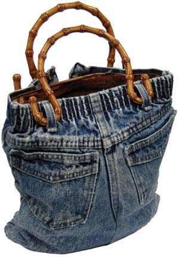
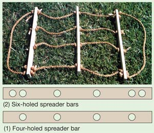

Country Lore December/January 2007
December/January 2006
December/January 2007 Issue #219
Readers’ tips to live by: Unique Homemade Holiday Gifts
Wholesome Bread
I have baked bread for more than 30 years. I developed this recipe to get as much whole wheat as possible into a light, moist bread. I use coarse-ground wheat and high-protein, high-gluten premium whole-wheat flour from Dakota Prairie Organic Flour Co.
The keys to this recipe are the high-protein, high-gluten whole-wheat flour, the coarse-ground wheat that keeps the bread moist, and the six hours it takes for the dough to rise, absorb the moisture and build a strong yeast.
Rickert’s Whole-wheat Bread
3 cups coarse-ground wheat
5½ cups fresh whole-wheat flour
5 tsp yeast
6¼ cups water
½ cup honey
? cup canola oil
3 tbsp ground flaxseed (optional)
5 tsp salt
About 7 to 8 cups white bread flour
First, mix the coarse-ground wheat, whole-wheat flour, yeast and water in a large bowl. Cover and let rise for six hours. Then, stir in the rest of the ingredients, except for the white bread flour. Add the white bread flour, 1 cup at a time, stirring with a heavy wooden spoon until the dough becomes too thick to stir. Now, knead the dough, adding the remainder of the white bread flour.
Next, cover the dough with a towel and let it rise until it doubles-about 1½ hours.
Sprinkle a little white flour on the countertop, then punch down the dough and form five equal loaves. Place one dough loaf on each end of a cookie sheet, and three dough loaves lengthwise in the middle.
Make three cuts in the top of each loaf. Let the loaves rise in a warm place until a dimple made with your finger won’t bounce back.
Last, bake at 375 degrees for about 40 minutes. After baking, place each loaf on a rack and let cool for six hours or more.
Eat one loaf, freeze one loaf and you’ll still have three loaves to give as gifts.
MICHAEL W. RICKERT
Reinbeck, Iowa
Jiffy Jeans Purse
I have been making purses out of blue jeans my children have outgrown. I find that children’s size eight or smaller works best. I line the purses with a new bandanna, about 21 inches square, or other leftover material I have on hand. The handles are available at craft stores in a variety of styles and colors.
Make the purse: Depending on how long you want the purse to be, cut off the jeans legs somewhere below the crotch and above the knees (which probably have holes in them anyway). Cut off the inside-leg seam all the way up one leg and down the other leg. You want the inside edges of the two legs to be fairly parallel so you can sew them together to make a square bottom to the purse.
Turn the pants inside out and sew the two front leg pieces together and then the two back leg pieces together. Sew across the bottom of the legs to make a tube. Turn the jeans purse right side out.
Line the purse: Fold a bandanna or other similar-sized piece of material in half. As a guide, lay the jeans purse on top of the material. Cut the lining material about an inch wider than the purse on each side. Stitch the sides of the bandanna together to form a pouch. Fold over about a half-inch around the top of the bandanna pouch and iron it flat. Insert the bandanna-pouch lining into the purse and pin the folded top of the bandanna to the inside of the waistband. Stitch the bandanna to the waistband, but stop and restart the sewing each time you come to a belt loop, so that the handles, with their curved ends, can slip into the belt loops for carrying.
CINDY LINDSAY
Osage City, Kansas
From Greeting Cards to Garden Kits
Here are 16 homemade holiday gift ideas from the Mother Earth News editors:
- Personalized greeting cards using card stock, available from any office supply store. Add your favorite photographs, used greeting cards or magazine photos.
- Themed scrapbooks depicting a favorite vacation, holiday or family celebration.
- Handmade books: Use your imagination to write stories based on personal experiences and adventures. Illustrate the book with photos, magazine pictures or your own hand-drawn illustrations.
- Home-brewed soda, cider, beer or wine, or give a brewing kit. (You’ll find recipes for brewing root beer and other sodas at www.MotherEarthNews.com.)
- Spiced mulled wine or spiced cider.
- Flavored herbal or fruit vinegars.
- Homemade jam, jelly, butters or bread, with the recipes included.
- Braided garlic or onions.
- Homemade pesto, frozen in ice cube trays.
- Dried lavender sachets.
- Dinner-in-a-jar: soup and quick bread mixes that will keep for many months, with instructions.
- Bunches of dried herbs tied with a colorful ribbon. Add some dried red peppers for accent color.
- A seasonal wreath fashioned from dried leaves, seed pods and evergreen boughs.
- “Floral” arrangements of fresh
evergreen branches, rose hips and bittersweet vines. - Kindling bundles: finely split aromatic wood, such as pine or cedar. Tie small kindling bundles with red or green cord and arrange in a basket with handles.
- Windowsill garden kits: several attractive small flowerpots, a bag of potting soil and seed packets of basil, chives, dill or other popular kitchen herbs.
You can find instructions and recipes for many of these gift ideas, along with more do-it-yourself holiday projects, in Mother’s Amazin’ Archive.
Give This Easy-to-Make Firewood Tote
This firewood carrier is easy to build. To assemble it, all you need are several feet of rope and some scraps of lumber that are at least 1½ inches wide and five-eighths-inch thick.
You’ll need three pieces of wood, each 22 inches long, for the spreader bars. Drill four half-inch holes through each piece of wood, spaced 6 inches apart on each board, with 2 inches left at either end of each stick. Next, in two (only two) of the spreader bars, drill an additional hole at the end of each bar, about 1 inch in from the end.
Cut four 3-foot lengths of rope and tie a knot in one end of each. In one of the six-holed spreader bars, thread each rope piece through the four interior holes and tie four more knots on the other side of the bar, so that the wood is held securely between the knots.
Tie another knot 10½ inches down on each rope. Thread the four ropes through the four-holed spreader bar, until it’s tight against these knots, and tie four more knots to hold it in place. Then, go down another 10½ inches of rope, tie four more knots, slip on the remaining six-holed bar, tie a final four knots to anchor it, and cut off the loose ends of the rope.
Last, add two pieces of 3-foot-long rope to the outside holes for handles, and you have a foolproof wood carrier.
Mother Earth News
September/October 1978
Share Your Wisdom
Have you learned some trick of the trade, secret formula or way to work more sustainably around the homestead? We’ll pay you $25 to $50 for each letter we publish. Send info, with photos please, to “Country Lore” at Mother Earth News; 1503 SW 42nd St.; Topeka, KS 66609, or to letters@MotherEarthNews.com.
|
 MICHAEL W. RICKERT Rickerts’ whole-wheat bread. |
 CINDY LINDSAY You can make this easy purse out of old blue jeans. |
 CINDY LINDSAY You can make this easy purse out of old blue jeans. |
|
 Mother Earth News archive This firewood carrier is inexpensive, easy to build and makes a great holiday gift. |
|
|